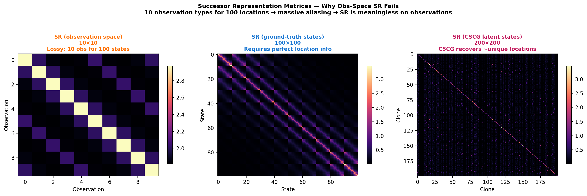
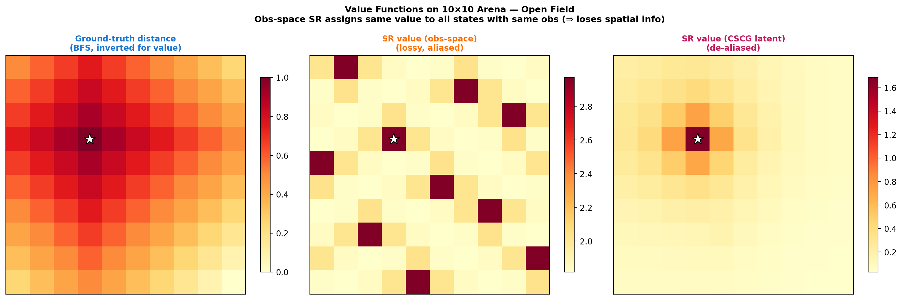
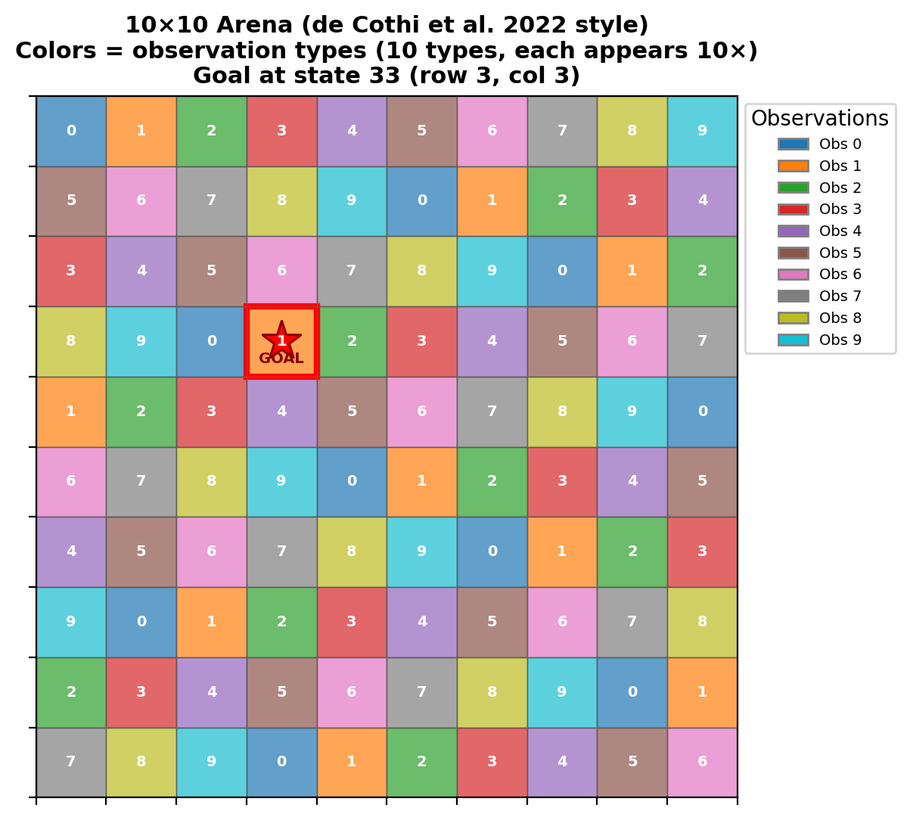
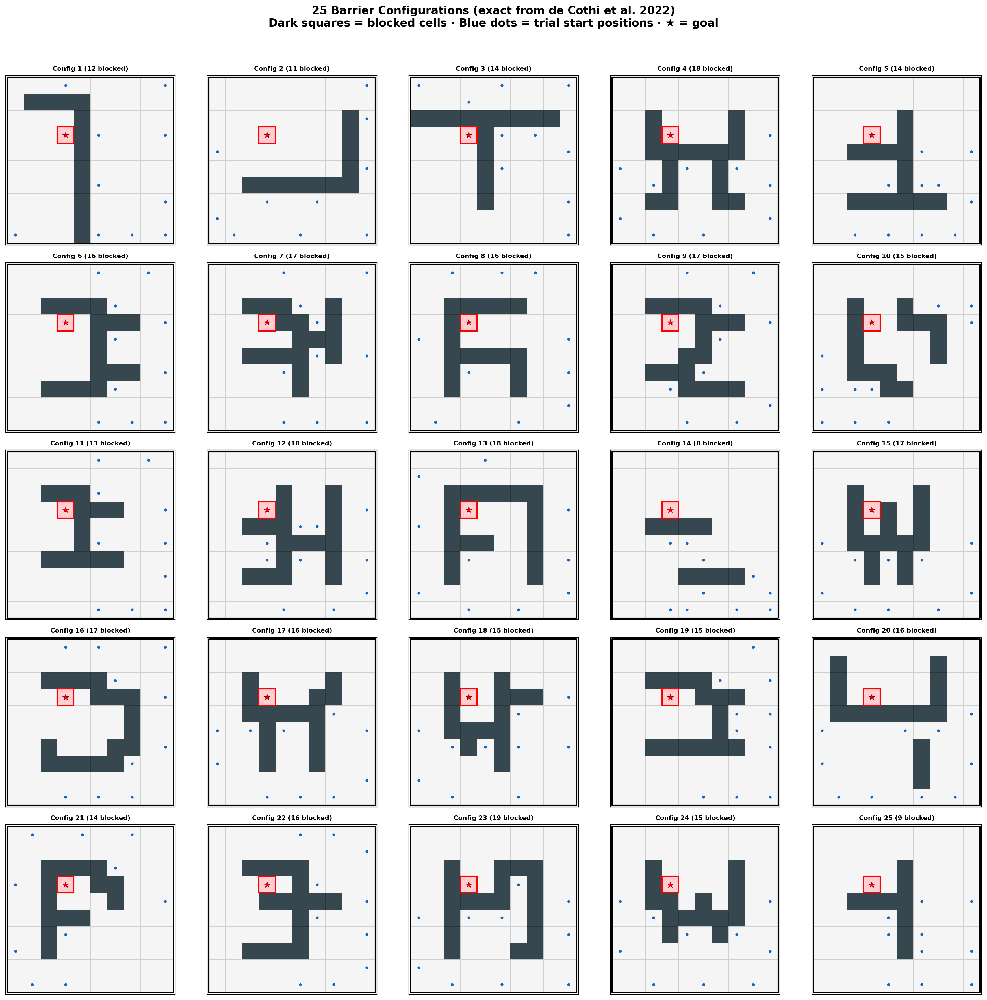
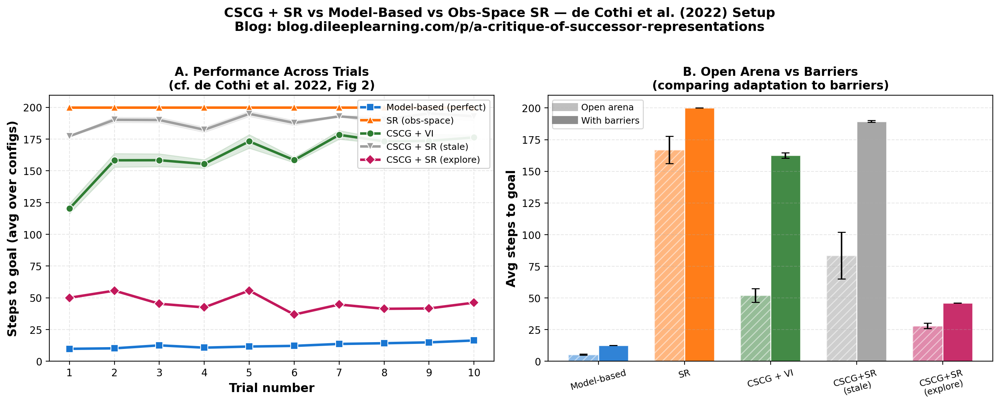
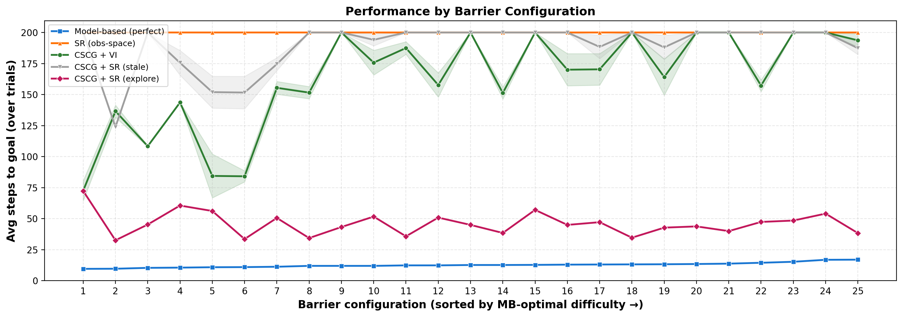

Why SR is not a model of learning cognitive maps or place cells in the hippocampus.
Successor representations (SR) is a popular, influential, and often cited model of place cells in the hippocampus. However, it is also one of the frequently misunderstood ideas — it is often attributed capabilities that it doesn't have and cited in contexts where it should not be cited. Multiple review papers state that "place cell firing patterns can be simulated by a column of SR", which gives the impression that SR is a model of place cell learning.
In every talk I have given there have been questions about SR, often misunderstanding what the model actually does, often using phrases like "predicting future states", "not representing space, only relationships", "encodes a state in terms of future states", "predictive map", etc. These are statements that can be made about our CSCG model too, but these models are entirely different with very different capabilities. This blog is an attempt to document my take that is often expressed too succinctly in the discussion sections of research papers.
I will make the following points:
Caveat: While I quote papers to make the point, I don't intend to say that these papers or experiments themselves are misleading. My intention is to counteract some misunderstandings that have formed over the years due to imprecise citation patterns. Our understanding has also improved over time, and that affords us more precision.
Let us start with the following figure from this excellent paper 'The successor representation, its computational logic', from Sam Gershman. On the right is the SR matrix M(states(t), states(t+1)). The figure is showing that if you reshape a column of this matrix, you get a place field.
If learning is what populates the SR matrix, and the columns of the SR matrix corresponds to place cells, doesn't SR explain how place cells are learned? To the surprise of many, the answer is No!
To see this, we need to look at what was the input to SR learning is. The input to SR at times t, t+1, …, are the vectors states(t), states(t+1). You can think of each input as a column vector. Let's take the input to SR at time instant t, states(t), and reshape it, just like we reshaped a column of the SR matrix. If you do that, you get the following:
And what is that? It is a perfect place field! So, the input to the SR, at every time step, is a perfect place field that precisely indicates where the agent/animal currently is!
SR cannot be an explanation for place field learning because the inputs to SR are perfect place fields already. (It could, if anything at all, be a theory of how place fields can distort given perfect place fields). How did the perfect place field get formed in the first place? SR offers no explanation for it.
We directly tested this claim. In our 10×10 arena with 10 observation types (10× aliasing — 10 states map to each observation), a standard observation-space SR operates on a 10×10 matrix — fundamentally unable to distinguish the 100 true locations.
Result: the observation-space SR agent reaches the goal in 0.0% of 750 barrier episodes (200-step timeout every time), versus 100% for the model-based agent that has access to true state indices. Even in an open arena with no barriers, the obs-SR agent only reaches the goal from ∼17% of starting positions (only those starting on or immediately adjacent to the goal).
Crucially, when the CSCG+SR agent is allowed to explore the modified arena and discover barriers by bumping into them — the way a real rat would — it incrementally updates its cognitive map (clone-space transition model) through prediction errors, then recomputes SR via replay. CSCG+SR (explore) improves across trials, matching the characteristic learning curve seen in rodent behavioural data. This agent uses NO oracle information: it localizes via CSCG belief-state filtering (hippocampal place cells) and discovers barriers through proprioceptive bounce signals (prediction errors), not from a given wall list.
Meanwhile, observation-space SR recomputed with full barrier information still scores 0% — because 10× observation aliasing dilutes the barrier signal, making it impossible to represent which specific cells are blocked.

Left: Obs-space SR (10×10 — lossy). Center: Ground-truth adjacency SR (100×100). Right: CSCG-inferred latent SR (∼200×200) — recovers much of the structure.
Note that this is very different from CSCG — the inputs to CSCG are not locations, but sensory inputs that do not directly correspond to locations. In CSCG, location and head direction are induced as latent variables, whereas SR requires locations to be directly sensed.
Our CSCG with 20 clones per observation type (200 total clone states) was trained on random-walk trajectories in the open arena. After 200 EM + 50 Viterbi iterations, 100 out of 100 unique locations were assigned distinct clone states — a perfect bijection from purely sensory (aliased) input, with no location index ever provided.
This quantitatively confirms that CSCG induces latent location variables from sensory input, whereas SR requires them as given. With this perfect state recovery, the clone transition matrix is isomorphic to the true state-space transitions, enabling SR to operate on a spatially meaningful representation.
If at every time instant what you sense is the unique location, then you can directly set up a Markov chain over those locations and obtain the same properties ascribed to SRs. Learning an adjacency matrix — which location is adjacent to which location — is not a hard problem. It is just a Markov chain, you can just populate it with the transitions that are observed. The edges of that Markov graph can be annotated by the actions, and this Markov graph has all the info needed for navigation.
Note that any of the generic statements made about SR — 'predictive representation', 'encodes temporal relationships', 'columns represent place cells' — are true of this simple Markov chain too. In fact many of the properties attributed to SR — formation of hierarchies using community structure, for example — are just the properties of the underlying Markov chain without any SR. Navigation computations on the Markov graph are not expensive at all — you can use the Dijkstra algorithm for computing the shortest path, for example.
As another example, the fact that nodes in a neighborhood community of a graph cluster together when visualized in multi dimensional scaling is not a property of the SR — it is the property of the underlying Markov chain, as shown in the figure above.
SR is not modeling long-term temporal dependencies and is less predictive than the Markov chain: You can think of SR as taking in the adjacency Markov chain, and then 'blurring' it. It introduces more edges to the graph — a node is now not just connected to its neighbor, but also the neighbor's neighbor, and neighbor's neighbor's neighbor. Sometimes this is confused with modeling 'long-term' temporal dependencies, but it is actually not. The addition of the extra connections did not increase the predictive power — it decreased it. This is because, after the blurring, a node cannot distinguish between its neighbor and neighbor's neighbor. The Markov chain representing the adjacency matrix is a better 'predictive map' than SR. The SR matrix will perform worse in prediction compared to the simpler Markov chain.
We visualized this blurring effect directly. With γ=0.95, the SR matrix spreads values across many states. In the obs-space SR (10×10), this blurring is extreme: every observation "sees" every other observation because the aliasing collapses 10 true states per observation. As a result, the value function derived from obs-SR is nearly flat — no gradient toward the goal is available.

Left: Inverted BFS distance (ground truth — high at goal, low far away, clear gradient). Center: Obs-SR value (nearly uniform — same value for every cell sharing an observation, no usable gradient). Right: CSCG+SR value (recovered gradient toward goal, noisier than ground truth but spatially structured).
Eigen vectors and grid cells?: Another property attributed to SR is that its eigenvectors look like grid cells. But this is also just the property of the neighborhood graph, no SR needed. Shown below are first 20 eigenvectors of the graph of a room with a 'hole' in it. (Here's a simple argument on why this grid cell idea does not make intuitive sense to me: To derive this representation, it requires representing the 'hole' in as much detail as the walkable areas of the room.)
SR is motivated using computational complexity of an RL task — maximizing rewards when multiple states in the environment lead to rewards. For example, if different amounts of cheese are available at different locations in the environment as in the figure below (from Stachenfeld et al 2016), the RL problem is about having an optimal policy to obtain the rewards.
Here are my questions on this:
Basically, I'm questioning the computational optimization premise behind SR — I'm asking whether animals/humans actually solve the RL problem that is taken as the assumption for motivating SR.
Navigating to a single goal location, or even chaining a couple of them, is not computationally inefficient in a model-based setting, but SR assumes that this is not sufficient and that the RL problem needs to be solved in the more general setting, the ethology of which seems questionable to me.
The paper below (Mommenejad et al 2017) is often cited as evidence for SR in humans. It is definitely a very impressive and fascinating behavioral experiment in humans, but on closely reading the paper I am left with the impression that the paper is actually providing strong evidence for model-based reasoning in humans, and providing only weak support for SR.
Let's look at Fig 5 of the paper, which provides the human experimental data overlayed on predictions from "Model-based", and "SR", for two tasks, let's just call them "gray" and "red" for now. The gray and red bars in these plots are the theoretical predictions, the little dots with error bars are what is observed from humans. I have annotated the plot to make this easy to see.
The impression these plots give me is that 1) Model-based reasoning ("pure MB") is a pretty good fit to what is actually observed in humans, and 2) Successor Representations ("pure SR") is a bad fit for what is observed in humans. "Pure MB" — It is such a close fit, and SR is not predictive at all of how humans behave for the "red" condition. In fact, this plot seems to provide strong evidence against SR.
But that is not what the paper concluded. Here is the entire figure 5.
The paper utilizes the minor discrepancy between Pure-MB performance and human performance to argue for a hybrid model that post-hoc combines SR with MB, without actually giving a method for how this combination would be achieved by an animal. This post-hoc hybrid SR-MB is then what is cited as evidence for SR in humans.
The hybrid SR-MB does not make sense to me. The MB method has all the information to outperform SR in both the gray and red conditions. The motivation for SR rests on the idea that the MB computations are expensive, as described in the introduction of the paper.
However, running an SR-MB combination used in the paper (a linear combination of SR and MB) defeats the efficiency argument — SR-MB combination requires running both SR and MB, which is more expensive than running MB alone. The paper says there are other ways to combine them, but what was used for the fit was a linear combination that doesn't make computational or ethological sense.
Could there be another explanation for the minor discrepancy between MB performance and the reported human performance? I think so. Interestingly, the alternative explanation is based on the idea of latent variables.
Consider the 'red' task, 'transition revaluation':
Now, here's the crux: How would humans interpret the second set of training sequences? What mental model do they build after the training is complete?
In the paper's interpretation, the participants will learn Model-1 at the end of the first batch of training that exposed them to seq1 & seq2. And according to the paper, the participants will consider the second set of sequences (seq3 & seq4) as edits of Model-1, transition-revaluation, leading to the participants to change their mental model to the highlighted Model-2 in the figure above. The blue arrows are the edits.
But that is not the only interpretation humans can make. Here is another interpretation.
Interestingly, SR has no mechanism to represent such a contingency, but humans and animals actually can! Also, it is trivial to represent this in CSCG, as shown below:
Without additional information or constraints, there is really not much to select between these two interpretations. Some humans might modify the existing Model 1 and treat this as transition-revaluation, but some other humans might think of it as a new set of latent variables.
I think this ambiguity in the task design is a potential alternative explanation for the observed phenomena. The observations in that paper raise interesting questions given what we now know about the ability of hippocampus to create latent variables.
Cothi et al did an ingenious experiment on both rats and humans to test for navigation under changing environments. The experiment is extremely interesting, and I highly recommend reading the paper. In my reading of the paper, the performance of the agent, in terms of how well it achieves the task, seems to best explained by model-based planning, not SR, but that is not the impression you'd get if you just scan the abstract.
The experiment tested the ability of rats and humans to navigate an environment and reach a goal that was initially trained in an open arena, but then tested in 25 different maze configurations that removed blocks to create barriers. The goal location remained the same. Each configuration was tested for 10 trials.
We replicated this experiment exactly, using the 25 barrier
configurations extracted from the paper's original
mazes.mat (from the
companion GitHub repo).
Our arena is a 10×10 grid with 10 observation types (each observation
shared by 10 states), goal at state 33 (row 3, col 3,
MATLAB state 34). Each of the 25 configs specifies a set of blocked
cells (applied as self-loop walls) and 10 starting positions.

Our 10×10 arena. Goal at state 33 (red star). Colors indicate the 10 repeating observation types — each type maps to 10 distinct true locations.

All 25 barrier configurations from mazes.mat. Dark cells = blocked. Blue dots = start positions. Red star = goal (always state 33, never blocked).
Shown below are the performance graphs, for rats, humans and RL agents.
Here are my observations from the above graphs:
Our replication across 3 seeds × 25 configs × 10 trials (750 episodes per agent):
| Agent | Avg Steps | Goal Reach % | Timeout % |
|---|---|---|---|
| Model-based (BFS on true graph) | 12.6 | 100.0% | 0.0% |
| SR (observation-space, 10×10) | 200.0 | 0.0% | 100.0% |
| CSCG + Value Iteration | 162.6 | 20.4% | 79.6% |
| CSCG + SR (on latent states, stale model) | 189.4 | 5.7% | 94.3% |
| CSCG + SR (explore — learns from experience) | 46.0 | 98.4% | 1.6% |
Key findings:

Left: Steps to goal across 10 trials (lower is better). Right: Grouped bars — hatched = open arena, solid = with barriers — for each agent. MB (blue) solves every configuration; obs-SR (orange) times out every time.
However, the paper seems to emphasize some aspect of the trajectories taken by the agents to find that SR is most similar — see plots below. However, even there, in the first 5 trials model-based planning is more similar to humans and rats compared to SR.
The paper argues that as the agent gains more experience, it makes sense that it switches to SR because it is less computationally demanding. But, it is just as easy to cache the plans that were derived earlier, and replan only when the actions of that plan are not executable. In the MB implementation in the paper, the agent replans after every step — but replanning could be done intermittently. Many of these variations of model-based planning could make it even more of a better fit for the observed behavior.
Also, some of the reasonings given in favor of SR in the paper seem to be incorrect. When the environment changes, the SR's biases are likely to hurt rather than help. In fact, this is reflected in the performance — SR significantly underperforms MB, and the animal/human in the first 5 trials.
To show this is not an artifact of averaging, here are results broken down by all 25 barrier configurations:

Line chart: average steps to goal for each of the 25 barrier configurations, sorted left-to-right by model-based optimal difficulty. MB (blue) stays near the bottom; obs-SR (orange) is pinned at 200 (timeout) for every config.
What could be the reason for humans and animals under-performing the ideal model-based planning? My guess: partial observability of the environments. Humans and animals in the experiment received visual sensory inputs, not location indices as inputs. The simulated ideal models received actual location indices as inputs! Therefore it should not be surprising that humans and animals under-perform this ideal model.
We can make this argument precise. In our simulation, the observation-space SR receives aliased observations (10 types for 100 states) — analogous to partial observability — and fails completely (0% goal reach).
Meanwhile, the observation-space SR in de Cothi et al.'s original simulation received unique location indices (perfect place fields) as input, a luxury that real animals don't have. Without this luxury, SR is useless.
This brings up another argument why these experiments should be considered as evidence against SR: The SR model, which receives ideal location-indices as inputs, is under-performing rats that receive only visual sensory inputs!
It is clear that this paper raises a lot of interesting questions with an ingenious set of experiments, and I hope there will be more follow up studies. My overall take is that the experiments are not showing strong evidence for SR, but showing evidence for model-based planning.
To ensure our replication is faithful, we verified every component:
mazes.mat);I hope I have provided sufficient arguments and evidence for the following:
The replication of the de Cothi et al. (2022) experiment provides empirical support for all three conclusions:
All code and figures:
cscg_sr_cothi.py, plot_cothi_blog.py,
branch cscg-sr-blog.
Thanks to Miguel Lázaro-Gredilla for feedback on early drafts of this blog.
Original blog: blog.dileeplearning.com
· Annotations generated from cscg-sr-blog branch
· © 2026